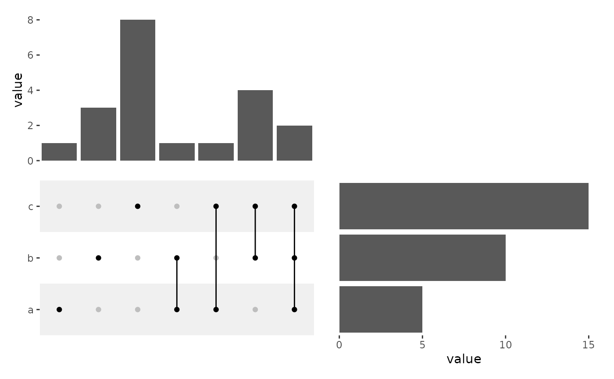

![[Experimental]](figures/lifecycle-experimental.svg)
ggupset is a specialized version of quad_discrete(), which simplifies
the creation of Upset plot.
Usage
ggupset(
data = NULL,
mapping = aes(),
...,
direction = "h",
point = NULL,
line = NULL,
rect = NULL,
width = NA,
height = NA,
theme = NULL,
active = NULL
)Arguments
- data
Data used to create the UpSet plot.
fortify_matrix()will be used to convert the data to a matrix. Currently, onlyfortify_matrix.list_upsetandfortify_matrix.matrix_upsetare suitable for creating an UpSet plot.- mapping
Default list of aesthetic mappings to use for main plot in the layout. If not specified, must be supplied in each layer added to the main plot.
- ...
Additional arguments passed to
fortify_matrix().- direction
A string indicating the direction of the UpSet plot,
"h"(horizontal) or"v"(vertical). In a vertical UpSet plot, the columns of the matrix correspond to the sets, and the rows correspond to the intersections. By default, the horizontal UpSet plot is used, where the rows of the matrix correspond to the sets and the columns correspond to the intersections.- point
A list of parameters passed to
geom_point().- line
A list of parameters passed to
geom_line().- rect
A list of parameters passed to
geom_rect().- width, height
The relative width/height of the main plot, can be a
unitobject.- theme
A
theme()object used to customize various elements of the layout, includingguides,title,subtitle,caption,margins,panel.border, andbackground. By default, the theme will inherit from the parentlayout. It also controls the panel spacing for all plots in the layout.- active
A
active()object that defines the context settings when added to a layout.
ggplot2 specification
The data input will be converted to a matrix using fortify_matrix(), and
the data in the underlying main plot will contain the following columns:
.panel_xand.panel_y: the column and row panel groups..xand.y: an integer index ofxandycoordinates.discrete_xand.discrete_y: a factor of the data labels (only applicable when.row_namesand.column_namesexists)..row_namesand.column_names: A character of the row and column names of the original matrix (only applicable when names exist)..row_indexand.column_index: the row and column index of the original matrix.value: the actual matrix value.
Examples
set.seed(123)
lt <- list(
a = sample(letters, 5),
b = sample(letters, 10),
c = sample(letters, 15)
)
ggupset(tune(lt)) +
scale_fill_manual(values = c("#F0F0F0", "white"), guide = "none") +
scale_color_manual(values = c("grey", "black"), guide = "none") +
anno_top() +
ggalign(data = function(d) ggalign_attr(d, "intersection_sizes")) +
ggplot2::geom_bar(aes(y = .data$value), stat = "identity") +
anno_right() +
ggalign(data = function(d) ggalign_attr(d, "set_sizes")) +
ggplot2::geom_bar(aes(x = .data$value),
stat = "identity",
orientation = "y"
)
